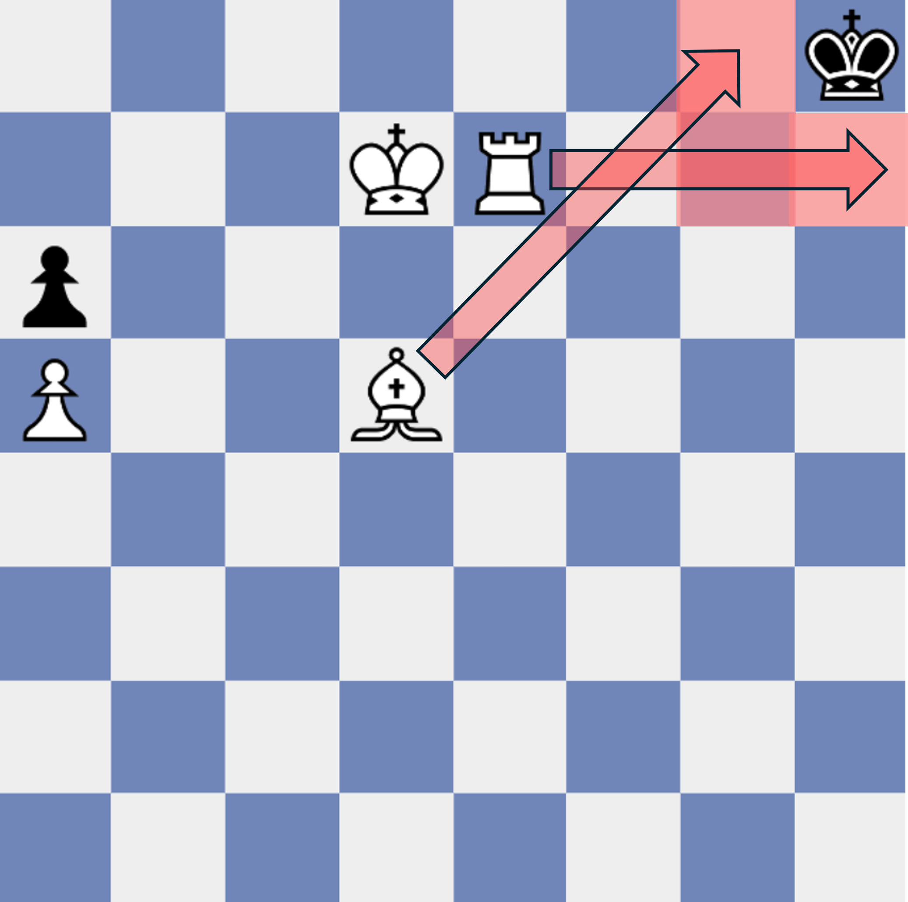

If a pawn makes it all the way to the end of the board, it can be turned into any other piece! (except for the king)
Usually you want to promote your pawn to a queen, since it is the most powerful piece, although sometimes promoting to a different piece is necessary to prevent stalemate (see the "special rules" page)
Promotion is very powerful and is often the deciding factor of a game, so you should try your best to put pressure on the opponent and march your pawns forward.
Usually you want to promote your pawn to a queen, since it is the most powerful piece, although sometimes promoting to a different piece is necessary to prevent stalemate (see the "special rules" page)
Promotion is very powerful and is often the deciding factor of a game, so you should try your best to put pressure on the opponent and march your pawns forward.


Normally, pawns can only capture pieces that are diagonally in front of it. However,
"En Passant" is a special type of move where a pawn can capture a pawn that is right next to it!
You can only perform en passant if all the following conditions are met:
- Your pawn is on the 4th row from the top
- Your opponent just moved their pawn 2 spaces (Not 1!) from the 2nd row from the top down next to your pawn.
Watch the animation here to see exactly how en passant works.
You can only perform en passant if all the following conditions are met:
- Your pawn is on the 4th row from the top
- Your opponent just moved their pawn 2 spaces (Not 1!) from the 2nd row from the top down next to your pawn.
Watch the animation here to see exactly how en passant works.
Stalemate is a situation where a player has no possible move to make on their turn.
In the image here, suppose it is black's turn. Black's pawn is blocked and can't move,
and the black king has no safe squares to move to either, so black is unable to make a move.
When Stalemate happens, the game is a draw, even if one player has more pieces left than the other.
Many people confuse Stalemate with Checkmate. Stalemate is different because the king is not under attack.
When Stalemate happens, the game is a draw, even if one player has more pieces left than the other.
Many people confuse Stalemate with Checkmate. Stalemate is different because the king is not under attack.

Castling is a special move where the rook slides over to the king, and then the king moves to the other side of the rook.
Even though castling involves 2 pieces, it only takes 1 turn.
Castling is a great way to keep your king safe and you should do it early in a game.
You can castle if all of the following are true:
- Neither the rook nor the king has moved,
- Your king is not in check,
- There are no pieces in between your king and the rook,
- There are no squares in between your king and the rook that is in the line of sight of any of your opponent's pieces.
You can castle if all of the following are true:
- Neither the rook nor the king has moved,
- Your king is not in check,
- There are no pieces in between your king and the rook,
- There are no squares in between your king and the rook that is in the line of sight of any of your opponent's pieces.